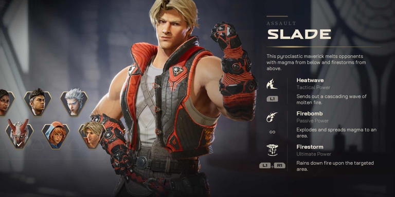
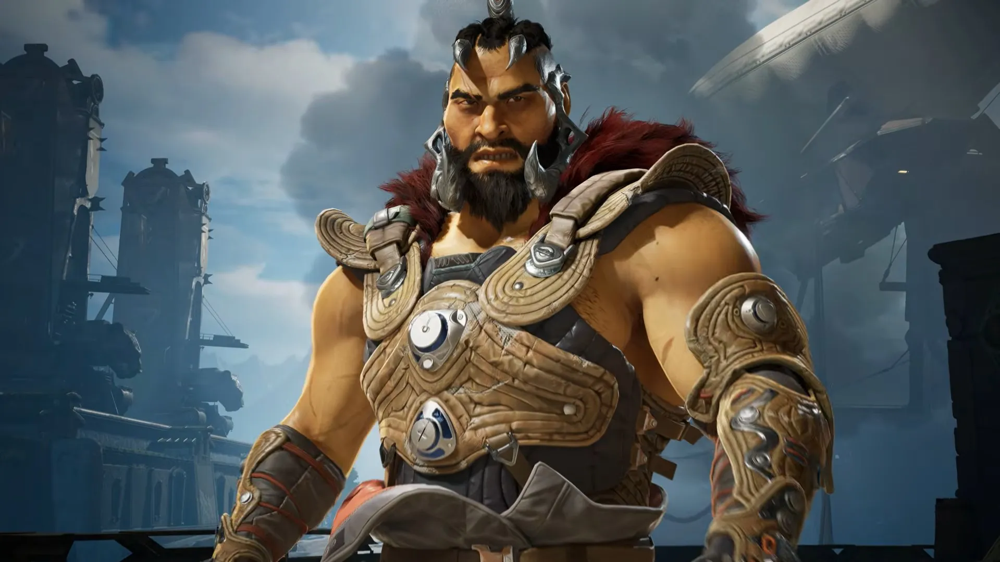
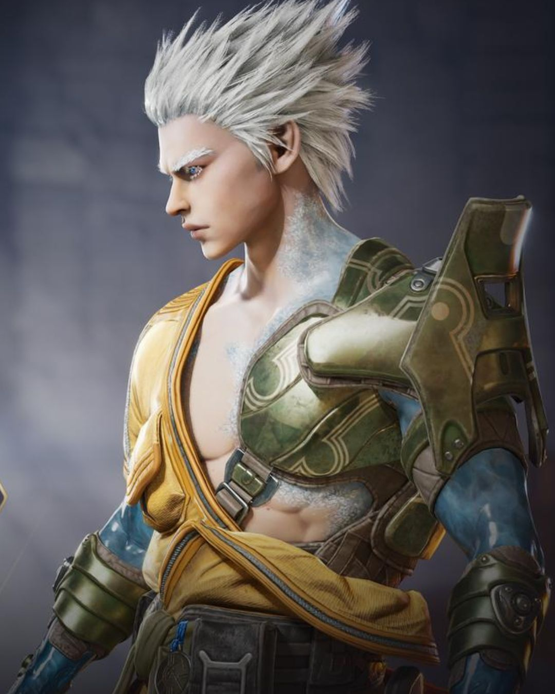
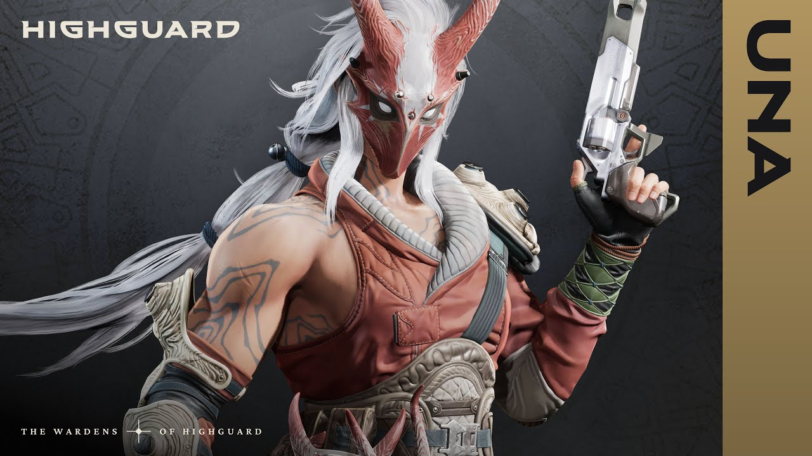

Top Five Character Designs
5. Mara

Mara is essentially a witch, who consumes enemy souls and uses their power to strengthen her allies. Her design reflects this with the dark hair and outfit, as well as the pale skin. Her magic is visualized as black otherworldly tentacles, which add to the unsettling feeling that her magic is inherently evil.
4. Slade
Slade is a street kid who grew up getting into brawls and fighting for money. He is loud and unapologetically himself, as shown by his bright and attention-grabbing outfit. His magic is all based on fire, as seen by his arms, which look like they are encased in lava. His overall design seems like one inspired by Street Fighter.
3. Redmane
Redmane is a mercenary and warrior whose magic allows him to mimic the abilities of animals. In game, he uses the powers of a lion to pounce on foes or destroy walls. Redmane's design embodies Mongolian warriors who were known for wearing animal pelts and fighting ruthlessly.
2. Kai
Kai is a seasoned monk who harbors an inner demon called Rime. His and Rime's powers center around ice, as seen by the ice encompassing his arms and back. Kai almost resembles Jack Frost, and I think that's a cool inspiration to take. My favorite thing about him are his icy arms and hands, as well as the various jewelry he wears on them.
1. Una
Una is a warrior from a forest tribe who was exiled by her people, and fights for a way to save her land, even if she'll never be able to return. She wears a mask which symbolizes this exile, and her outfit is one that you would expect from a forest warrior. She has very large muscles that truly show the strength of her resolve and the training she has gone through.